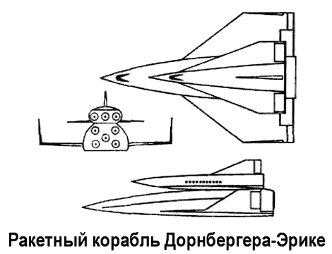

Ракетный корабль Дорнбергера и проект «Bo-Mi»
Много думали о создании ракетного пассажирского корабля для путешествий на большие расстояния и такие специалисты, как директор Пенемюнде Вальтер Дорнбергер и его бывший подчиненный Крафт Эрике. По окончании войны эти двое были вывезены в США и вошли в штат фирмы «Белл». Там они разработали проект ракетного аппарата, подобного бомбардировщику-«антиподу» Зенгера, и в начале 1952 года даже съездили во Францию, тщетно пытаясь убедить Эйгена Зенгера прибыть в Соединенные Штаты, чтобы присоединиться к фирме «Белл».
Ранние проекты Дорнбергера и Эрике представляли собой варианты бомбардировщика Зенгера-Бредт, однако прямые крылья с клиновидным профилем вскоре уступили дельтовидному в плане крылу.
Результатом работы Дорнбергера и Эрике стал двухступенчатый ракетный корабль. Обе ступени представляли собой соединенные параллельно друг с другом пилотируемые ракеты с дельтовидными крыльями; причем пассажиры должны были размещаться во второй ступени. Схема полета ракетного корабля Дорнбергера выглядела следующим образом. При старте одновременно включаются все ракетные установки — пять в нижней ступени и три в верхней. Три двигателя верхней ступени первое время питаются топливом из баков нижней ступени, таким образом дополнительная тяга достигается без увеличения стартового веса. Отделение ступеней происходит через 130 секунд после старта: нижняя ступень совершает посадку, а верхняя — продолжает полет. Наибольшее ускорение (3,5 g) корабль испытывает при достижении максимальной скорости — 3,75 км/с, однако все пассажиры должны выдерживать его даже без предварительной тренировки.

В условиях невесомости для удобства пассажиров один двигатель продолжает работать на полную мощность для того, чтобы обеспечить ускорение в 0,25 g. Максимальная высота полета составляет 44 километра, а продолжительность — 75 минут.
Этот проект привлек внимание руководителей фирмы «Белл». В апреле 1952 года на основе разработок по ракетному кораблю Дорнбергера они предложили командованию ВВС построить пилотируемую «ракету-бомбардировщик», названную «БоМи» («BoMi» — сокращение от «Bomber-Missile»).
«БоМи» представлял собой практически точное воспроизведение двухступенчатой крылатой ракеты Дорнбергера-Эрике, но с учетом военного применения. Первая ступень (стартовый ускоритель) имела длину почти 36,6 метра и размах крыла 18,3 метра и несла экипаж из двух человек. Вторая ступень (планирующая ракета) была 18,3 метра в длину с крылом 10,7 метра в размахе, несла одного пилота и полезную нагрузку — ядерную боеголовку массой 1814 килограммов.
Стартовый вес аппарата «БоМи», включая боевую нагрузку, составлял 362 880 килограммов.
В качестве топлива для обеих ступеней планировалось использовать несимметричный диметилгидразин и четырехокись азота (N204).
Руководство фирмы «Белл» уверяло командование ВВС, что в случае принятия проекта американская армия через несколько лет получит суборбитальный ядерный носитель с дальностью полета 4800 километров, способный развивать скорость около 4 Махов на высоте 30,5 километра. Был также предложен орбитальный вариант «БоМи», включавший стартовую ступень длиной 44 метра и вторую ступень длиной 22,78 метра с полезной нагрузкой 6350 килограммов.
В отсеке полезной нагрузки должны были помещаться две ядерные бомбы. Компоненты ракетного топлива для орбитального варианта были заменены на жидкий кислород и жидкий водород.
Эскизный проект «БоМи» фирма «Белл» подготовила 10 апреля 1953 года, однако в результате анализа было выявлено несколько серьезных просчетов. Наиболее серьезные вопросы вызывала система охлаждения; кроме того, показатели аэродинамического совершенства, указанные фирмой «Белл», были откровенно завышены.
Тем не менее 1 апреля 1954 года ВВС заключили с фирмой «Белл» контракт на проведение исследований системы оружия «М-Икс-2276» («МХ-2276»), основанной на концепции ракетоплана. Ракетоплан «МХ-2276» должен был обеспечить разведку и бомбометание над вражеской территорией, имея максимальную скорость 6,6 км/с на высоте 79 километров и дальность действия — 17000 километров.
Официальный срок контракта истек в мае 1955 года, но компания «Белл» продолжила исследования на собственные средства и к декабрю выпустила документацию на различные варианты двухступенчатой ракеты «БоМи» и ракетоплана «МХ-2276».
Параллельно командование ВВС потребовало от компании «БОИНГ» включить в программу исследований по совершенствованию бомбардировщика «В-58» («Project MX-2145») тему ракетопланов. Проведя соответствующие расчеты, инженеры «Боинга» доказали, что будет гораздо проще и выгоднее разработать аппарат, который в ходе выполнения боевого задания может облететь Землю по орбите, вместо того чтобы возвращаться после атаки назад. При этом они отмечали трудности в проектировании конструкции, которая могла бы выдерживать высокий нагрев и напряжения в конструкции, ожидаемые при таком полете, но рекомендовали продолжить исследования из-за большого военного потенциала рассматриваемой системы.